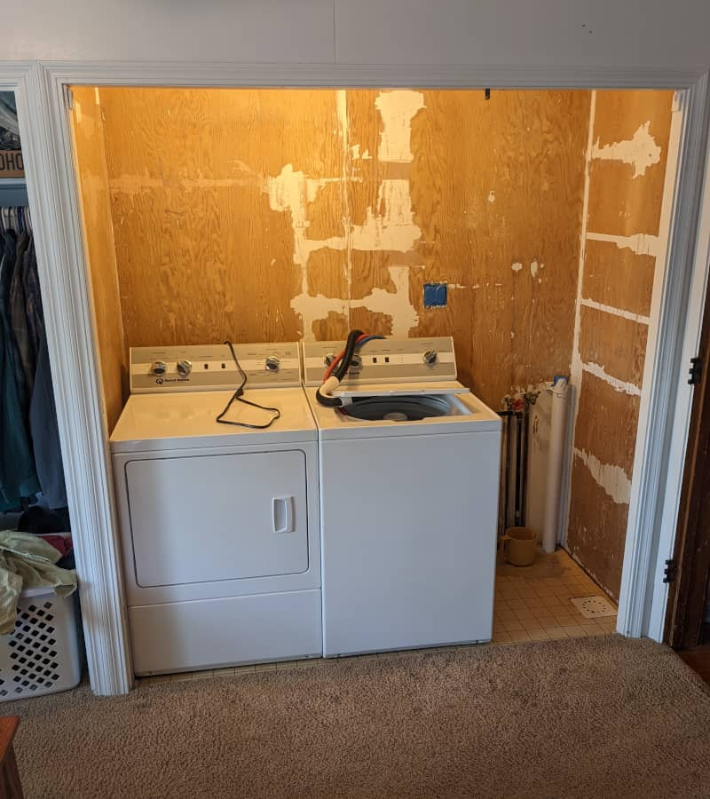
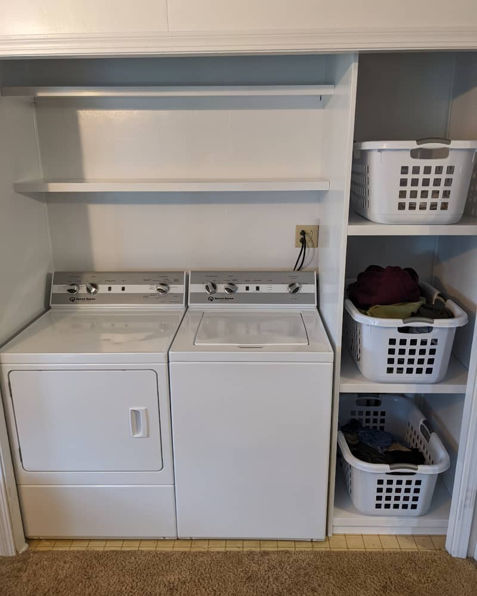

Laundry Area Shelves
My mother recently got a new washer and dryer. During the course of my childhood, she's been through two horizontal-load "high efficiency" washers. Of course, you have to have a matching set, so she also bought new dryers. After more trouble with the newest washer, they decided to buy a commercial-grade Speed Queen that will hopefully last many years.
 This meant that her old shelving had to be ripped out to make room for the two side-by-side units. After doing that, I found the paint in such a sorry state that I ended up scraping the entire closet. Most of the paint fell right off, but a little was stubborn to any amount of scraping.
After that, I began building the shelves. Since they were to be painted, I chose MDF plywood as the material. It cuts easily, feels sturdy, and makes it easy to end up with a smooth surface due to its lack of grain. The edge of MDF plywood would look hideous if painted and prone to denting and chipping. So I edge-banded the exposed edges with poplar.
I also made the shelves on the right-hand side removable. This will make it easier to get to the plumbing should it need maintenance. When I painted, I removed the shelves and painted them separately. Otherwise, the paint would have acted like glue, keeping them in place.
Mother seems pleased with the way it turned out. She especially appreciated not having to bend over to put clothes from the middle laundry basket (the one that fills up most often in her system) into the washer. Since she's the only important opinion, I can chalk this project up as a success.